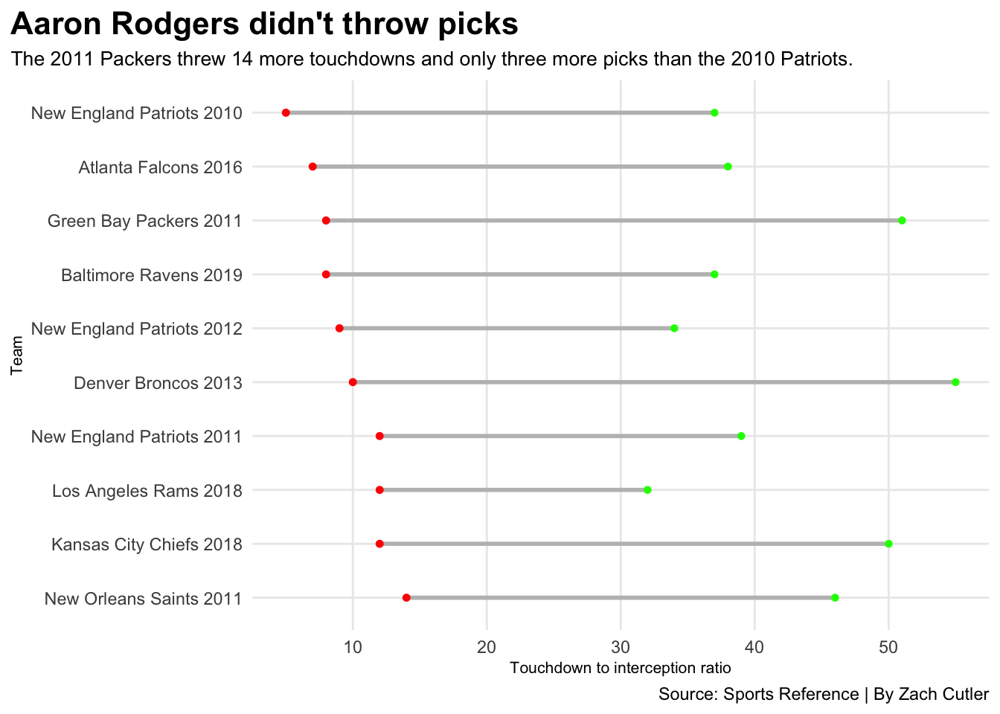

Where do the 2011 Packers rank among the best NFL offenses of the 2010s?
football
nfl
analysis
Author
Zach Cutler
Published
November 30, 2022
The Green Bay Packers are currently 4-8 and have less than a three percent chance of making the playoffs. This season has been a lost cause. As Aaron Rodgers continues to age and the Packers waste yet another year of his career, I figured rather than wallow in self-pity, I’d look back to a simpler time, 2011.
After winning the Super Bowl in 2010, the Packers were viewed as the next dynasty, and rightfully so. Their offense was loaded with talent. Led by Aaron Rodgers, the Packers offense featured a plethora of weapons including Greg Jennings, Randall Cobb, Jordy Nelson, James Jones, Donald Driver and Jermichael Finley among others.
Despite going 15-1 and Rodgers winning the MVP, this team is often overlooked, largely in part because the Packers lost in the divisional round and 2011 was over a decade ago. With the rise of social media and offensive stars like Patrick Mahomes regularly making highlight-worthy plays, the 2011 Packers have been forgotten.
But just how good were the Packers relative to other high-powered offenses of the 2010s?
The Packers had no problem scoring in 2011. In fact, they scored the third most points out of all offenses in the 2010s. This is incredibly impressive considering the recent rule adaptations that cater towards offensive football (illegal contact, roughing the passer, etc.) did not exist in 2011.
Points are great, but what matters most about an offense is not how just many points they score, but how efficient they are on third down and in the red zone.
Code
topfive<- combined %>%filter(PF >540)ggplot() +geom_point(data=combined, aes(x=RZPct, y=ThirdPer, size=PF), color="grey", alpha=.3) +geom_point(data=topscore, aes(x=RZPct, y=ThirdPer, size=PF), color="red") +geom_point(data=packers, aes(x=RZPct, y=ThirdPer, size=PF), color="dark green") +geom_text_repel(data=topscore, aes(x=RZPct, y=ThirdPer, label=teamseason), size=2.5 ) +geom_vline(xintercept =54.29688, color="blue", alpha=.5) +geom_hline(yintercept =38.88267, color="blue",alpha=.5) +geom_text(aes(x=55.8, y=37), label="NFL Averages", color="blue", alpha=.5, size=3) +theme_minimal() +theme(plot.title =element_text(size =16, face ="bold"),axis.title =element_text(size =10), plot.subtitle =element_text(size=10), panel.grid.minor =element_blank(),plot.title.position ="plot" ) +labs(title="The 2011 Packers were efficient in the red zone and on third\ndown",subtitle="Yet there were multiple teams more efficent than them.", caption ="Source: Sports Reference | By Zach Cutler",x ="Red zone scoring percentage",y="Third down percentage",size="Points Scored" )
The Packers were not an easy team to stop. They scored a touchdown on over 65 percent of trips to the red zone and converted just under 50 percent of third downs. In other words, they consistently moved the chains and finished drives. Needless to say, it’s tough to defend an offense when virtually every wide receiver is a mismatch for your defense.
However, compared to the other top 10 scoring teams of the 2010s, the Packers were in the middle of the pack. Teams like the 2018 Kansas City Chiefs and 2013 Denver Broncos were more efficient in the red zone and the 2011 New Orleans Saints were almost 10 percent better on third down.
Code
ggplot() +geom_point(data=combined, aes(x=ScPer, y=TOPer), color="grey") +geom_smooth(data=combined, aes(x=ScPer, y=TOPer), method="lm", se=FALSE, color="#B1BABF") +geom_point(data=topfive, aes(x=ScPer, y=TOPer), color="red") +geom_point(data=packers, aes(x=ScPer, y=TOPer), color="dark green") +geom_text_repel(data=topfive, aes(x=ScPer, y=TOPer, label=teamseason), size=3 ) +geom_vline(xintercept =34.40114, color="blue", alpha=.5) +geom_hline(yintercept =12.07614 , color="blue",alpha=.5) +geom_text(aes(x=35.3, y=13), label="NFL Averages", color="blue", alpha=.5, size=3)+geom_text(aes(x=50, y=3.5), label="Good", color="blue", alpha=.5, size=3)+geom_text(aes(x=20, y=19), label="Bad", color="blue", alpha=.5, size=3)+theme_minimal() +theme(plot.title =element_text(size =16, face ="bold"),axis.title =element_text(size =10), plot.subtitle =element_text(size=10), panel.grid.minor =element_blank(),plot.title.position ="plot" ) +labs(title="Protecting the ball and scoring is a recipe for success in the NFL",subtitle="The 2011 Packers scored on almost half of their drives and rarely turned the ball over.", caption ="Source: Sports Reference | By Zach Cutler",x ="Scoring percentage",y="Turnover percentage" )
Where the 2011 Packers really shined was their ability to protect the ball. They only turned the ball over on 6.1 percent of drives leading to 48.3 percent of drives resulting in a score. It is hard to have any success on defense when the opposing offense doesn’t give the ball away and scores every other drive.
Head coach Mike McCarthy must have done his research on the inefficiencies of running the ball relative to passing because the Packers offense was built solely on the pass. In fact, they had over three times the amount of pass yards than they had rushing. This makes sense considering Ryan Grant was the starting running back (no Packers rusher ended the season with more than 600 yards rushing) and the receiving core was so deep that Randall Cobb was the fifth wide receiver. Good teams cater their play calling to the strengths of the players, and McCarthy did that.
But if there was one person to credit the overall success of the offense, it would be Aaron Rodgers.
Code
ratio <- topscore %>%mutate(TDtoInt = PassTD/Int )gb <- ratio %>%filter(teamseason =="Green Bay Packers 2011")ggplot() +geom_lollipop(data=ratio, aes(y=reorder(teamseason, PassYA), x=PassYA), horizontal =TRUE ) +geom_lollipop(data=gb,aes(y=teamseason, x=PassYA),horizontal =TRUE,color ="Dark Green" ) +theme_minimal() +theme(plot.title =element_text(size =16, face ="bold"),axis.title =element_text(size =8), plot.subtitle =element_text(size=10), panel.grid.minor =element_blank(),plot.title.position ="plot" ) +labs(title="The Packers passing offense was explosive",subtitle="The 2011 Packers had the highest yards per attempt out of all the top 10 offenses of the 2010s", caption ="Source: Sports Reference | By Zach Cutler",x ="Yards per attempt",y="Team" )
In 2011, Rodgers had arguably his best season, throwing for 4643 yards, 45 touchdowns and six interceptions (credit the other six touchdowns and two picks to Matt Flynn). Rodgers had a passer rating of over 100 through the first 12 games of the season, leading to a season passer rating of 122.5 (the highest season passer rating in NFL history). During this time, Rodgers had a whopping 9.25 yards per attempt. For reference, Patrick Mahomes averaged 8.8 yards per attempt in 2018. This means that the Packers offense was generating some of the biggest and most explosive plays through the air of any offense in the 2010s.
Code
ggplot() +geom_dumbbell(data=topscore, aes(y=reorder(teamseason, -Int), x=PassTD, xend=Int),size =1,color ="grey",colour_x ="green",colour_xend ="red") +theme_minimal() +theme(plot.title =element_text(size =16, face ="bold"),axis.title =element_text(size =8), plot.subtitle =element_text(size=10), panel.grid.minor =element_blank(),plot.title.position ="plot" ) +labs(title="Aaron Rodgers didn't throw picks",subtitle="The 2011 Packers threw 14 more touchdowns and only three more picks than the 2010 Patriots.", caption ="Source: Sports Reference | By Zach Cutler",x ="Touchdown to interception ratio",y="Team" )

The Packers 6.375 touchdown to interception ratio was second only to the Tom Brady-led 2010 Patriots (7.4). On paper, it looks like the 2010 Patriots had a better touchdown to interception ratio than the Packers, but Green Bay had a larger sample size and blew them out of the water in terms of touchdowns thrown. The Packers threw 14 more touchdowns and only three more interceptions than the Patriots.
Were the 2011 Packers the best offense of the 2010s? No, probably not. That award would likely go to the 2018 Chiefs or the 2013 Broncos. However, the Packers had a deadly efficient passing offense that moved the ball at a historic rate. Their offense repeatedly moved the chains, finished drives and avoided turning the ball over.